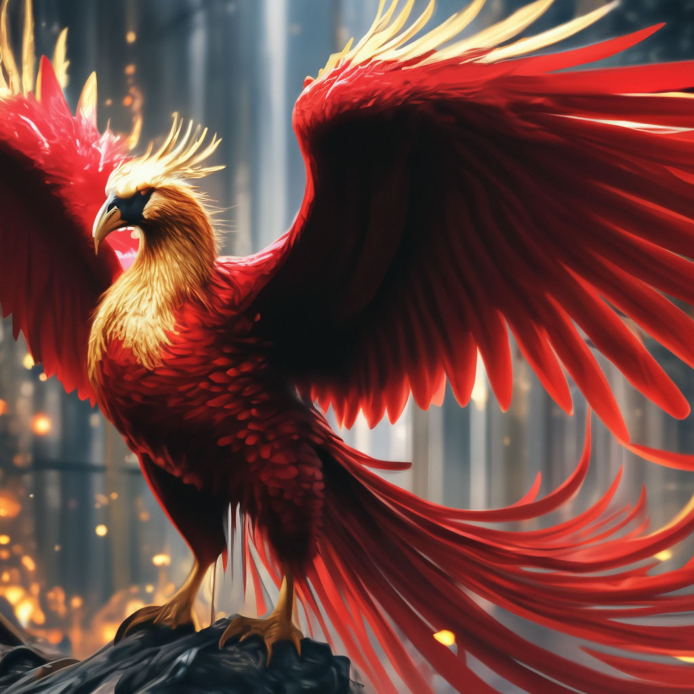

Destacados
Fenix
El Fénix es un ave legendaria de fuego, conocida por su capacidad de renacer de sus propias cenizas tras morir. Sus plumas resplandecen en tonos rojos y dorados, y su canto puede inspirar valor o curar heridas. Es símbolo de renovación, inmortalidad y poder elemental del fuego.